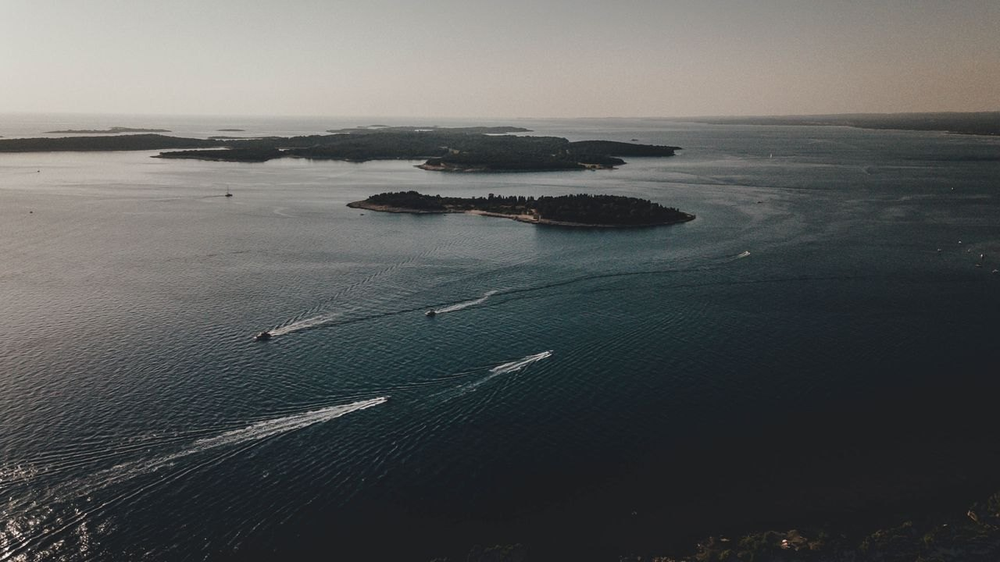

Poluotok
Istra je poluotok u obliku srca na sjevernom Jadranu, s dugom obalom, starim kamenim gradićima na brdima, maslinicima i vinogradima. Pula se nalazi na južnom vrhu, što je čini dobrom bazom: more je blizu, zračna luka je u blizini, a većinu regije možete obići jednodnevnim izletima.

Kako doći
Pula ima vlastitu zračnu luku, oko 10 do 15 minuta vožnje automobilom od većine mjesta koja nudimo. Mnogi gosti dolaze automobilom, a ceste su dobre. Okvirne cestovne udaljenosti do Pule:
| Iz | Udaljenost | Automobilom |
|---|---|---|
| Trst | oko 110 km | oko 1,5 sata |
| Ljubljana | oko 180 km | oko 2,5 sata |
| Zagreb | oko 270 km | oko 3 sata |
| Venecija | oko 280 km | oko 3,5 sata |
| Beč | oko 570 km | oko 6 sati |
| München | oko 580 km | oko 6 sati |
| Budimpešta | oko 620 km | oko 6,5 sati |
Kada doći
Sezona traje od svibnja do listopada. Srpanj i kolovoz najtopliji su i najprometniji mjeseci te odgovaraju svima koji žive za plažu. Lipanj i rujan nude toplo more uz više prostora i naši su omiljeni mjeseci za izlete brodom.
Što jesti i piti
Istarska kuhinja spaja more i brežuljke. Potražite svježu ribu i lignje na obali, fuže s tartufima ili divljači u unutrašnjosti, domaće maslinovo ulje i bijelo vino malvaziju. Pitajte domaćina gdje jedu mještani i očekujte da su najbolja jela ona jednostavna.
Gradovi i mjesta za razgledavanje
- Pula: rimska Arena, Augustov hram i stari grad, sve na pješačkoj udaljenosti od Rive.
- Rovinj: šareni stari grad na malom poluotoku, lako dostupan izletom brodom.
- Poreč: Eufrazijeva bazilika s mozaicima.
- Motovun i gradići u unutrašnjosti: kamena naselja iznad vinograda, idealni za opušten dan automobilom.
- Rt Kamenjak: divlje uvale i stjenovite obale na južnom vrhu.
Obala s broda
Obala izgleda drukčije s mora: litice, špilje i male plaže do kojih ceste ne vode. Naš vodič kroz izlete brodom pomaže Vam odabrati između dnevne ture, ture u zalazak sunca i jednodnevnih izleta.
Prije putovanja
Prije polaska provjerite uvjete ulaska za svoje državljanstvo i aktualne informacije za putnike koje objavljuje Vaša vlada.